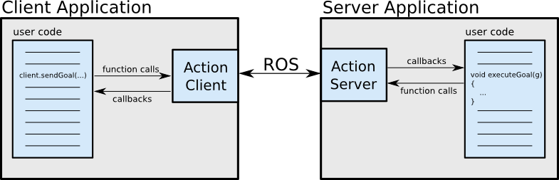

actionlib
1. actionlib
ROS service는 어떤 작업을 수행하기 위해 노드에 request하고, 그에 대한 response를 받을 수 있는 인터페이스이다. 그러나, 서비스를 실행하는 데 시간이 오래걸리는 경우 실행 중에 취소를 요청하거나 그 실행 방식에 대해 주기적으로 피드백을 받고자 할 때, action을 사용한다. actionlib 패키지는 이러한 action을 사용할 수 있는 서버를 생성하는 tool를 제공하고, 서버에 요청을 보내기 위한 클라이언트 인터페이스를 제공한다.
- actionlib의 구현 방식의 세부 정보는 다음에서 확인할 수 있다.
2. Client-Server Interaction
ActionClient와 ActionServer는 ROS Action Protocol을 통해 통신한다. client와 server는 간단한 API를 제공하는데, client가 server에 request를 하거나, server에서 해당 request를 function call 또는 callback 함수를 통해 execute를 하는 역할을 한다.

3. Action Specification: Goal, Feedback, & Result
client와 server가 통신할 수 있도록 다음의 구성을 가진 메세지를 정의해야 한다.
- Goal : client에서 server에 요청하는 goal
- Feedback : server가 client가 요청한 goal의 진행 상황을 알려주는 방법을 제공하며,
- Result : server가 client에 요청받은 goal에 대한 결과를 제공하며, 마지막에 일회성으로 제공됨.
4. .action file
.action에 action 메세지에 필요한 goal, feedback, result가 정의되며, 각각은 ---으로 구분된다.
# Define the goal
uint32 dishwasher_id # Specify which dishwasher we want to use
---
# Define the result
uint32 total_dishes_cleaned
---
# Define a feedback message
float32 percent_complete
4.1 Build a package by Catkin
4.1.1 Build a package that contains .action file
패키지가 .action 파일을 포함하고 있는 경우에는 다음과 같이 패키지를 구성한다.
메세지를 정의하는 catkin package의 CmakeLists.txt에 다음 사항을 추가한다.
find_package(catkin REQUIRED genmsg actionlib_msgs)
add_action_files(DIRECTORY action FILES DoDishes.action)
generate_messages(DEPENDENCIES actionlib_msgs)
다음으로 package.xml 파일에도 다음의 사항을 추가해야 한다.
<build_depend>actionlib_msgs</build_depend>
<exec_depend>actionlib_msgs</exec_depend>
만약 package.xml의 format이 2버전이라면 다음처럼 추가한다.
<depend>actionlib</depend>
<depend>actionlib_msgs</depend>
4.1.2 Build a package that depends on actionlib API
만약 actionlib API에 대한 의존성이 있다면 다음과 같이 패키지를 구성한다.
- CMakeLists.txt
find_package(catkin REQUIRED genmsg actionlib_msgs actionlib) add_action_files(DIRECTORY action FILES DoDishes.action) generate_messages(DEPENDENCIES actionlib_msgs) - package.xml ```xml
### 4.2 Results
그 결과 빌드하면 다음과 같은 msg 파일이 생성되며, 이는 actionlib 내부적으로 사용된다.
* DoDishesAction.msg
* DoDishesActionGoal.msg
* DoDishesActionResult.msg
* DoDishesActionFeedback.msg
* DoDishesGoal.msg
* DoDishesResult.msg
* DoDishesFeedback.msg
## 5. Using the ActionClient
다음은 정의된 DoDishes.action 파일을 이용하여 client에서 server로 `do_dishes`라는 action 이름으로 goal을 요청하는 예제이다.
### 5.1 C++ SimpleActionClient
* [C++ SimpleActionClien API](https://docs.ros.org/en/api/actionlib/html/classactionlib_1_1SimpleActionClient.html)
```cpp
#include <chores/DoDishesAction.h> // Note: "Action" is appended
#include <actionlib/client/simple_action_client.h>
typedef actionlib::SimpleActionClient<chores::DoDishesAction> Client;
int main(int argc, char** argv)
{
ros::init(argc, argv, "do_dishes_client");
Client client("do_dishes", true); // true -> don't need ros::spin()
client.waitForServer();
chores::DoDishesGoal goal;
// Fill in goal here
client.sendGoal(goal);
client.waitForResult(ros::Duration(5.0));
if (client.getState() == actionlib::SimpleClientGoalState::SUCCEEDED)
printf("Yay! The dishes are now clean");
printf("Current State: %s\n", client.getState().toString().c_str());
return 0;
}
5.2 Python SimpleActionClient
#! /usr/bin/env python
import roslib
roslib.load_manifest('my_pkg_name')
import rospy
import actionlib
from chores.msg import DoDishesAction, DoDishesGoal
if __name__ == '__main__':
rospy.init_node('do_dishes_client')
client = actionlib.SimpleActionClient('do_dishes', DoDishesAction)
client.wait_for_server()
goal = DoDishesGoal()
# Fill in the goal here
client.send_goal(goal)
client.wait_for_result(rospy.Duration.from_sec(5.0))
6. Implementing an ActionServer
다음은 정의된 DoDishes.action 파일을 이용하여 client에서 do_dishes action 요청을 받았을 때, goal에 대한 response를 하는 예제이다.
6.1 C++ SimpleActionServer
#include <chores/DoDishesAction.h> // Note: "Action" is appended
#include <actionlib/server/simple_action_server.h>
typedef actionlib::SimpleActionServer<chores::DoDishesAction> Server;
void execute(const chores::DoDishesGoalConstPtr& goal, Server* as) // Note: "Action" is not appended to DoDishes here
{
// Do lots of awesome groundbreaking robot stuff here
as->setSucceeded();
}
int main(int argc, char** argv)
{
ros::init(argc, argv, "do_dishes_server");
ros::NodeHandle n;
Server server(n, "do_dishes", boost::bind(&execute, _1, &server), false);
server.start();
ros::spin();
return 0;
}
6.2 Python SimpleActionServer
#! /usr/bin/env python
import roslib
roslib.load_manifest('my_pkg_name')
import rospy
import actionlib
from chores.msg import DoDishesAction
class DoDishesServer:
def __init__(self):
self.server = actionlib.SimpleActionServer('do_dishes', DoDishesAction, self.execute, False)
self.server.start()
def execute(self, goal):
# Do lots of awesome groundbreaking robot stuff here
self.server.set_succeeded()
if __name__ == '__main__':
rospy.init_node('do_dishes_server')
server = DoDishesServer()
rospy.spin()